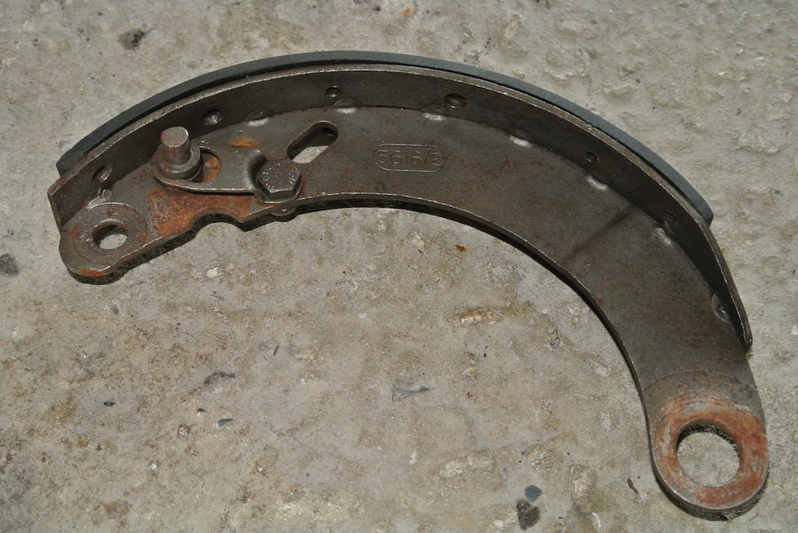
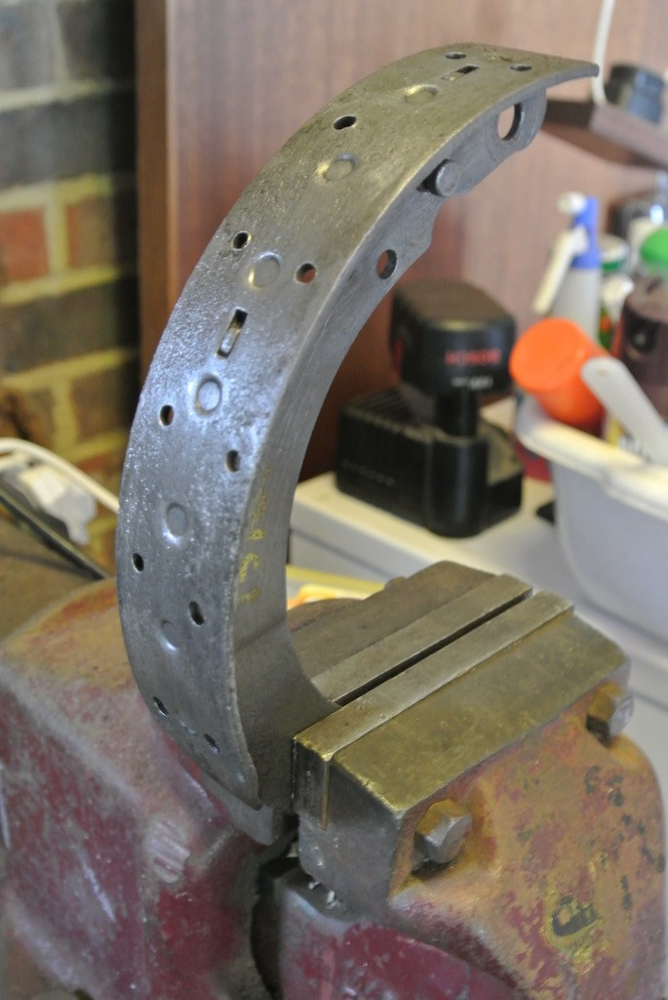
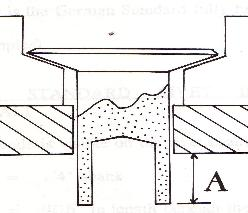
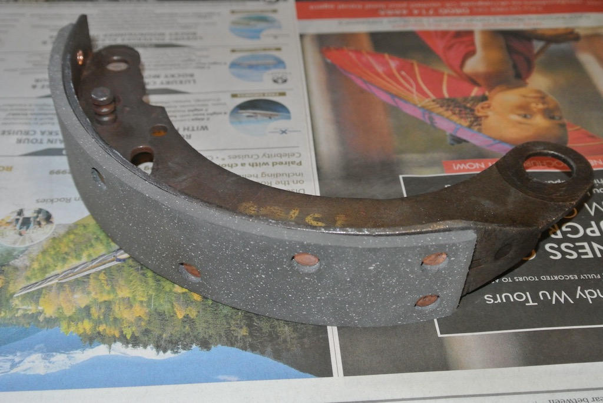
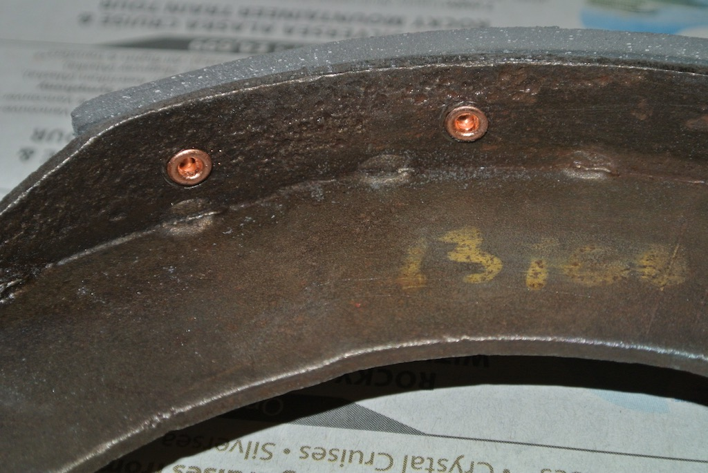
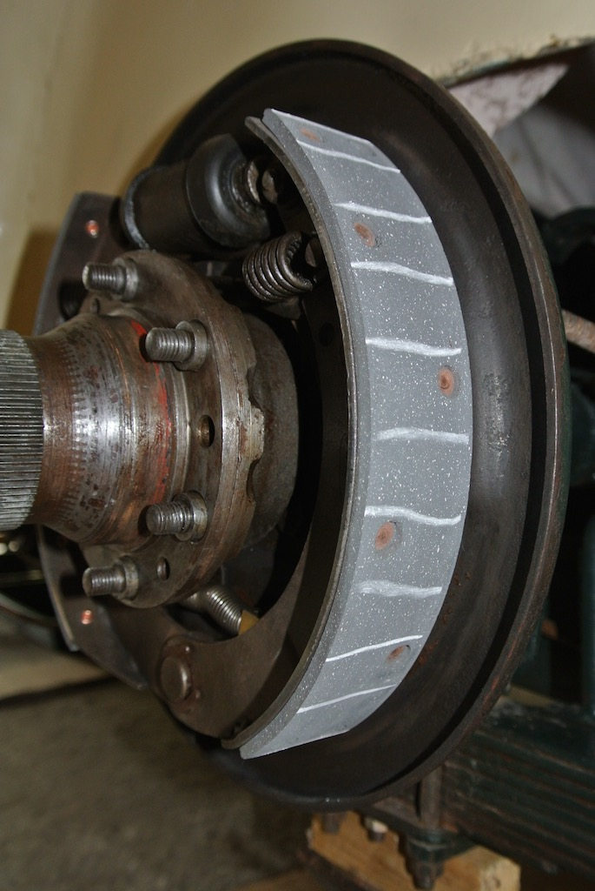
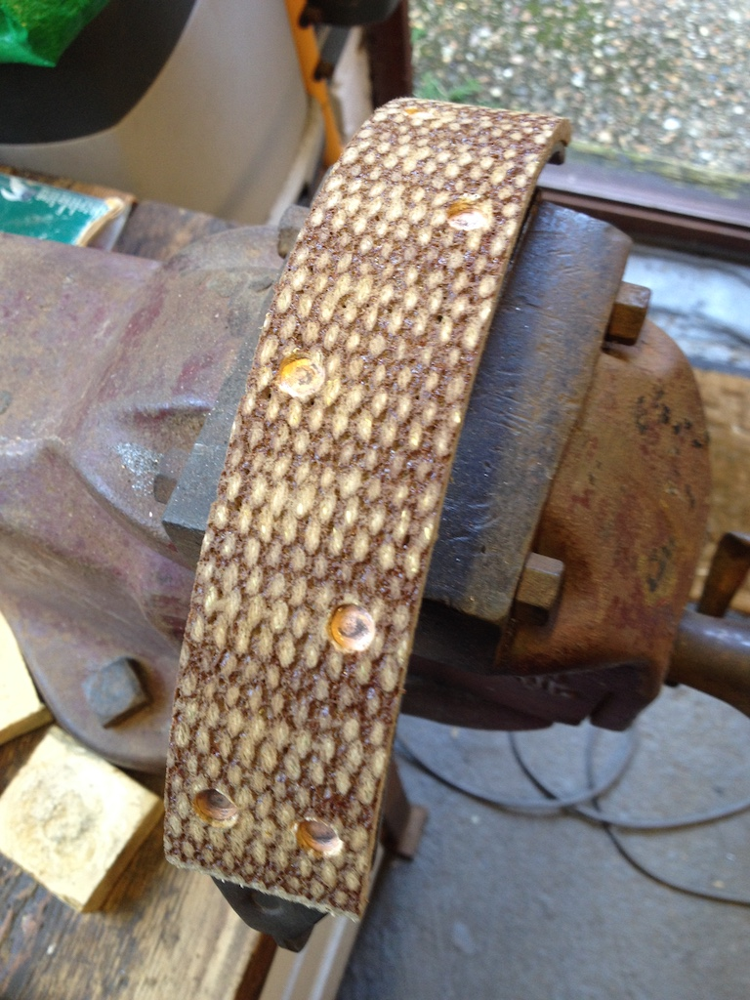

Relining Brake Shoes
As a result of the problem with the rear axle I needed to replace the rear brake shoes, since the linings were soaked in oil from the differential. However, rather than simply replace the whole shoe I decided to try relining them. So in October 2017 I bought new linings from the Octagon Club stand at Beaulieu, which came with the appropriate rivets.
However, as can be seen in the photo, the existing linings were bonded on to the shoes and so it was necessary to remove the old linings using a blowtorch, to soften the glue, and a scraper and then a wire brush.
This is an example of one shoe, held in the vice, after the old lining had been removed.
Instructions on how to fit the linings came with them, but I needed to buy a suitable 'roll set punch'. I found a company called Auto & Industrial Friction Services who said that they could supply punches of all sizes. On their web site they provided the following diagrams showing how the rivets needed to be clinched.
The rivets shown in the diagrams have countersunk heads, whereas the rivets supplied with the linings were flat, but the principle is the same.
It's often said that to rivet linings to a shoe requires three hands. However, I found that by holding a steel rod in the vice, I could hold the shoe on the rod, along with the punch, in my left hand and hammer the punch with my right. These two photos show an example of the riveted lining from both sides of the shoe. I also filed the leading and trailing edges of the linings at 45° so that they would slide more easily in the drums.
 When I re-installed the shoes I found that they were very tight; the drums would hardly turn. I put chalk on the shoes so as to find if they were rubbing in particular spots. However, there was no noticable smudging of the chalk in any one place. I started by sanding down the linings a little, which helped. But then I discovered that it was the handbrake cables that were pulling the shoes on slightly. There was little room to slacken the handbrake cables, but I loosened them a small amount.
Relining Front Brake Shoes
When I replaced the kingpins I discovered that the linings on the brake shoes were coming un-bonded! So I decided to rivet on new linings. After asking advice on lining material I bought a set from NTG in October 2021.
As far as I can work out, the linings from NTG are woven. This could be from organic material, such as from coconut shells or from Aramid fibre (which is the same as Kevlar). They also have short threads of brass in them. The person I spoke to at NTG did not know what material is used.
There was a noticable improvement in the braking power, which is a good thing.
© David James 2017 Last updated: 29th August 2023